Notícias internacionais em português, com contexto pro Brasil e a fonte sempre no lugar.
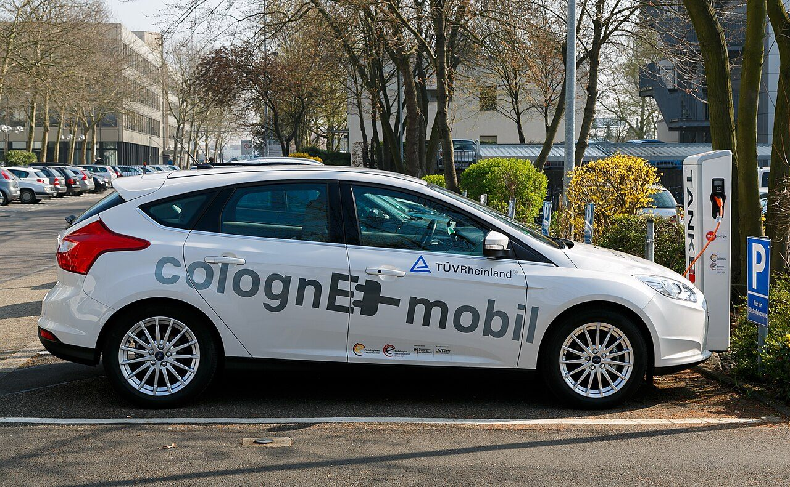
Carros e casas que devolvem energia à rede: conheça o "everything-to-grid"
O Fórum Econômico Mundial e a Frontiers elegeram a energia bidirecional a tecnologia emergente número um de 2026. Entenda o conceito e por que ele faz sentido especial no Brasil.
Cobertura Watermouse Media · fonte: Fórum Econômico Mundial + Frontiers
Turquia, Paquistão e Arábia firmam pacto de defesa no estilo OTAN
02CiênciaO cérebro humano é, na verdade, dois órgãos que a evolução colou
03TecnologiaBateria de sódio, sem lítio, passa nos testes de segurança da Hyundai
04NegóciosEólica e solar superam os fósseis na União Europeia pela 1ª vez
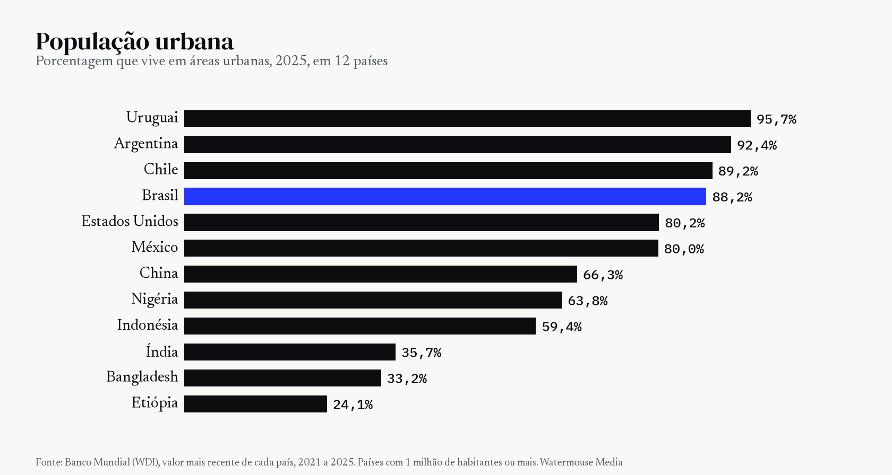
O Brasil é 88% urbano, mas em 44 países menos da metade da população vive em cidades
88,2% dos brasileiros vivem em áreas urbanas. Em 44 países, menos da metade da população é urbana.
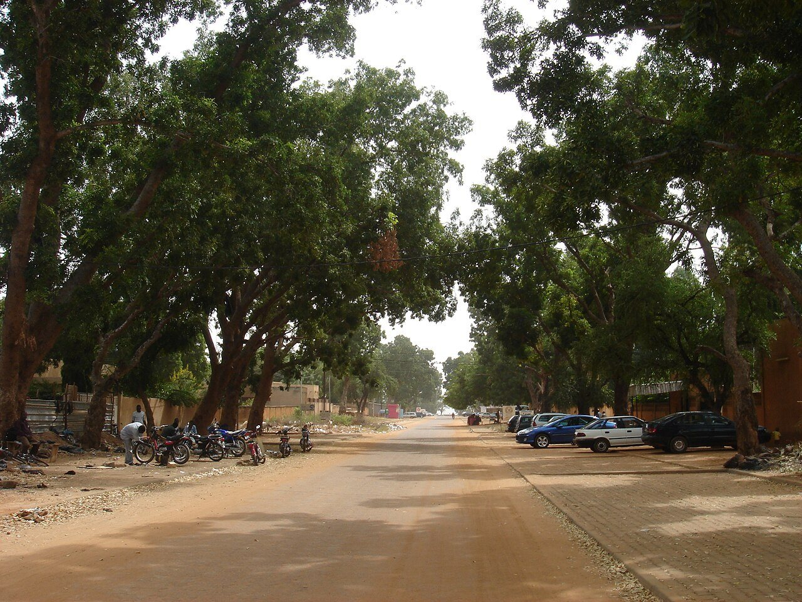
Níger proíbe venda de combustível das 21h às 6h para tentar normalizar o abastecimento
Postos do Níger não podem vender gasolina entre 21h e 6h. A medida é descrita como temporária, e taxistas pedem revisão.
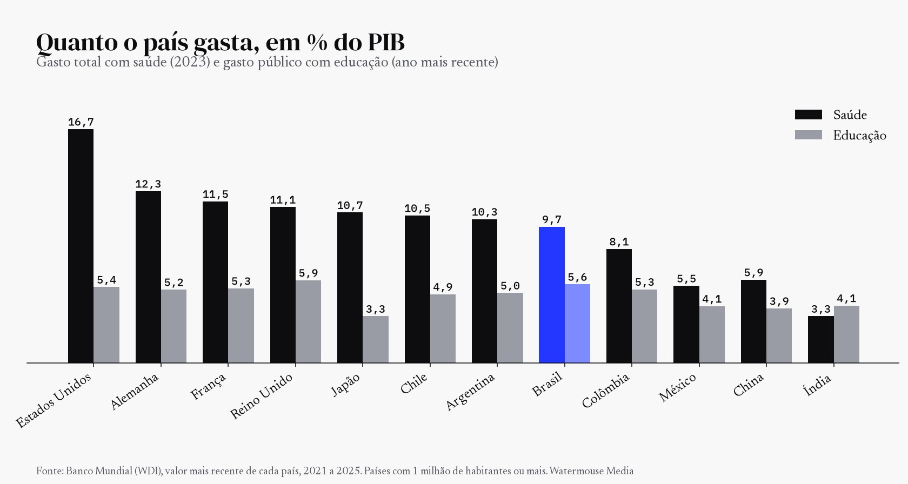
O Brasil gasta 9,7% do PIB com saúde e 5,6% com educação pública: onde isso o coloca entre 150 países
O Brasil gasta 9,7% do PIB com saúde e 5,6% com educação pública, acima de vários países ricos em educação e abaixo dos mais gastadores em saúde.
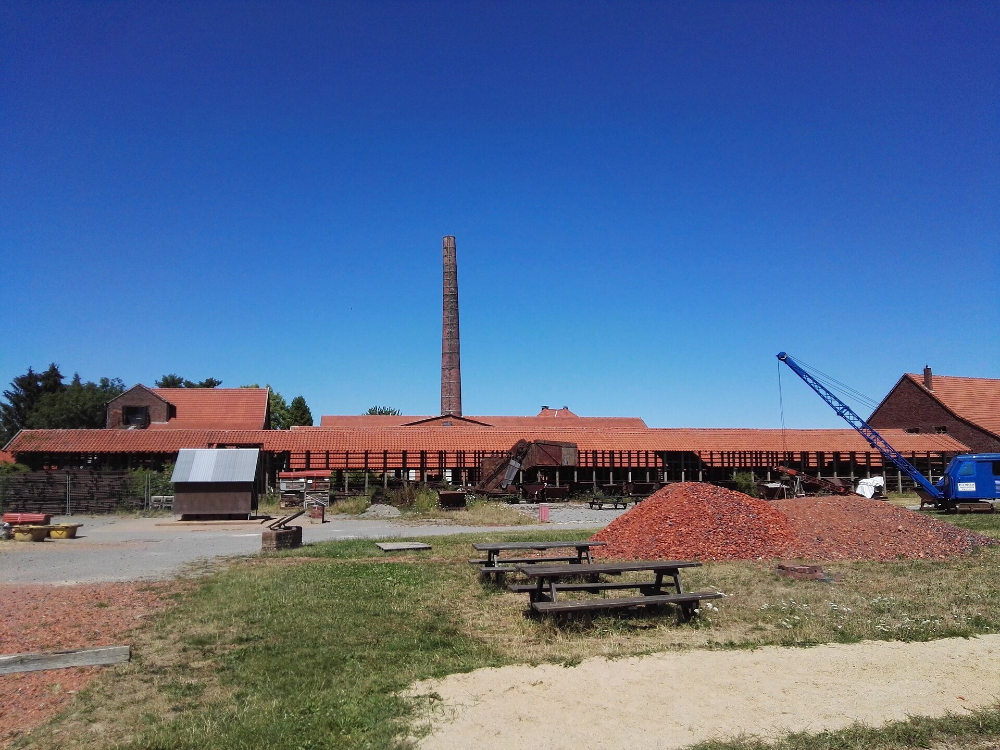
Fornos de tijolos mais limpos em Bangladesh cortam poluição, mas os ganhos não chegaram aos trabalhadores
Fornos mais eficientes em Bangladesh gastam menos energia, mas estudo com 1.442 trabalhadores não viu melhora nas condições de trabalho.
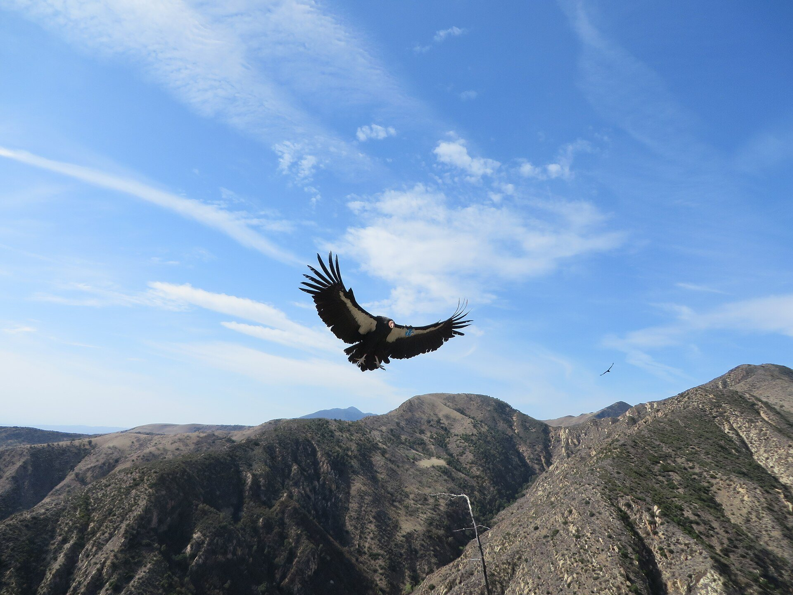
O que o condor-da-califórnia ensina sobre quem deve decidir quais espécies salvar
Análise usa o resgate do condor para defender que povos indígenas e comunidades locais tenham poder de decisão, não só consulta.
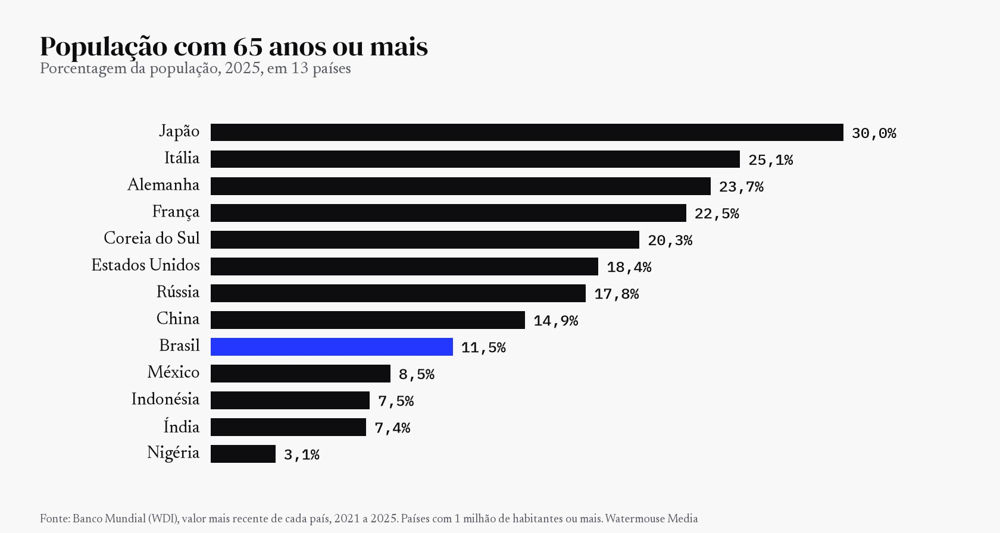
30 países já têm mais de 20% da população com 65 anos ou mais, e o Brasil está em 11,5%
30 países de mais de 1 milhão de habitantes têm mais de 20% de idosos. O Brasil tem 11,5%, na faixa intermediária.
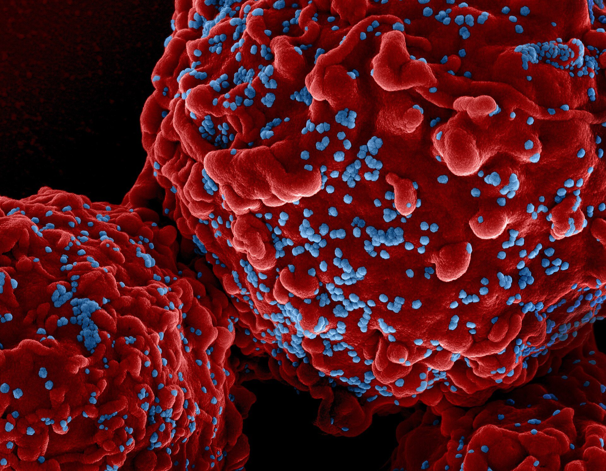
Injeção contra o HIV, aplicada duas vezes por ano, traz esperança em Uganda, mas as doses são raras
O lenacapavir, injeção semestral, quase eliminou novas infecções em estudos. Em Uganda, só há alguns milhares de doses.
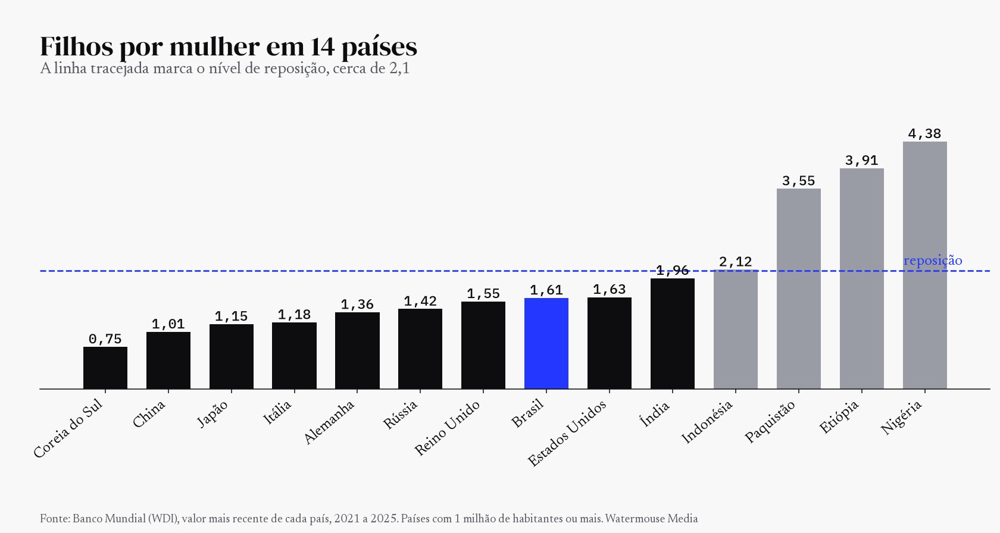
57 países com mais de 1 milhão de habitantes já têm menos filhos por mulher que o Brasil, e eles reúnem 2,7 bilhões de pessoas
O Brasil tem 1,61 filho por mulher e está na faixa de baixa fecundidade: 57 países de mais de 1 milhão de habitantes têm taxa ainda menor.
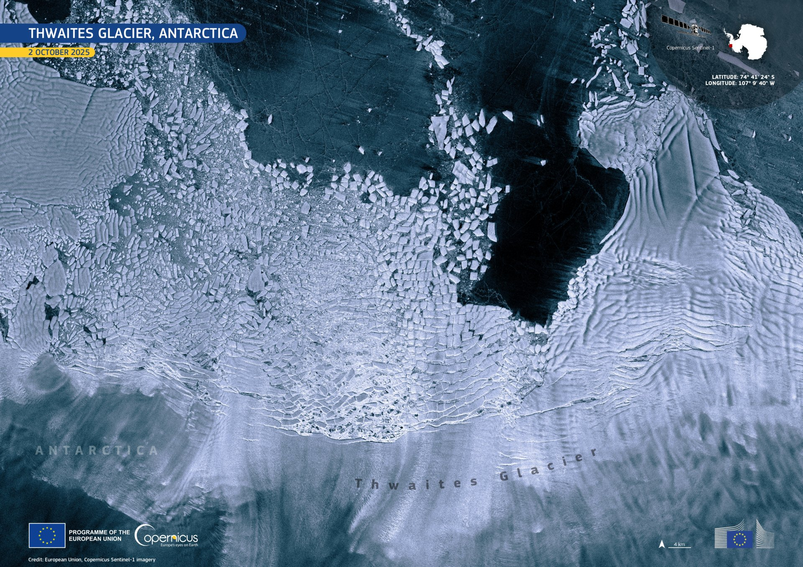
Novo modelo indica que a geleira Thwaites pode elevar o nível do mar em até 30 mm até 2100, o dobro de projeções anteriores
Um novo modelo da UC Irvine e da NASA sugere que a Thwaites pode contribuir com até 30 mm para o nível do mar até 2100, o dobro do projetado antes.
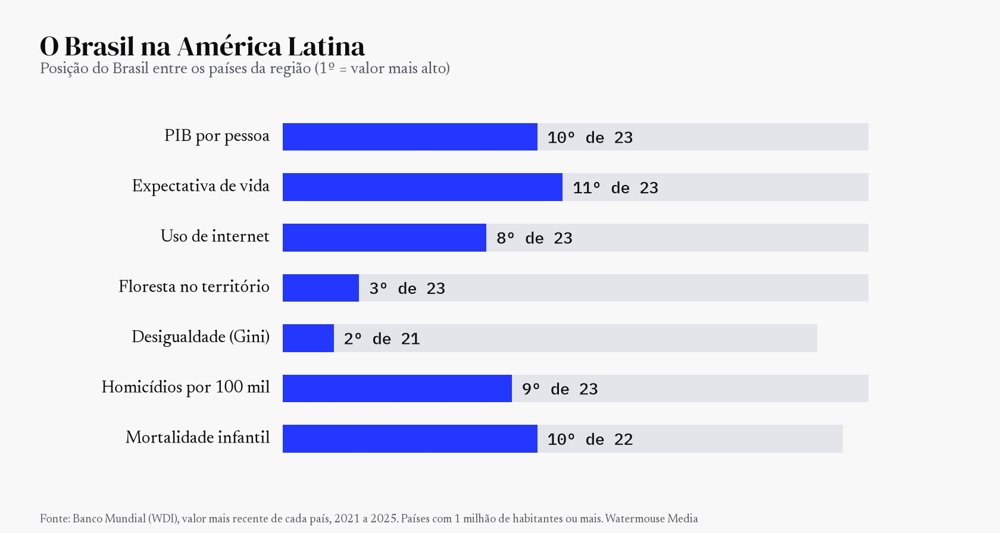
O Brasil no meio da tabela: onde fica entre 23 países da América Latina em renda, vida longa, internet, floresta e desigualdade
Em sete indicadores, o Brasil fica no meio da tabela na região, com a floresta como destaque e a desigualdade como ponto fraco.
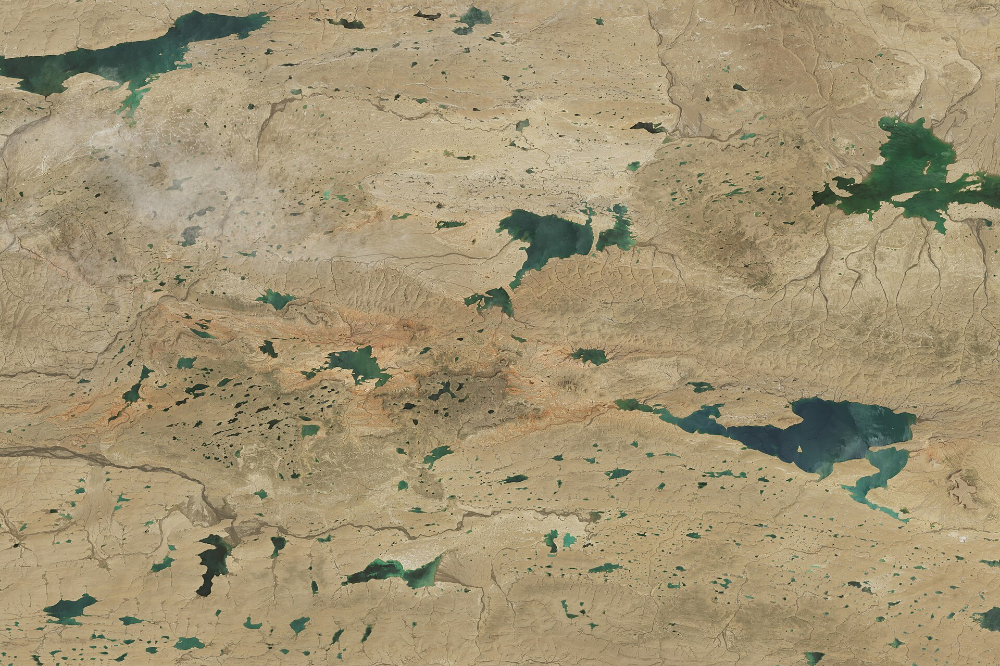
Gelo do planalto de Guliya, no Tibete, pode ter mais de 128 mil anos e ampliar a história do clima da região
Testemunhos de gelo do Tibete podem ter mais de 128 mil anos, segundo novas datações com isótopos de berílio e cloro.
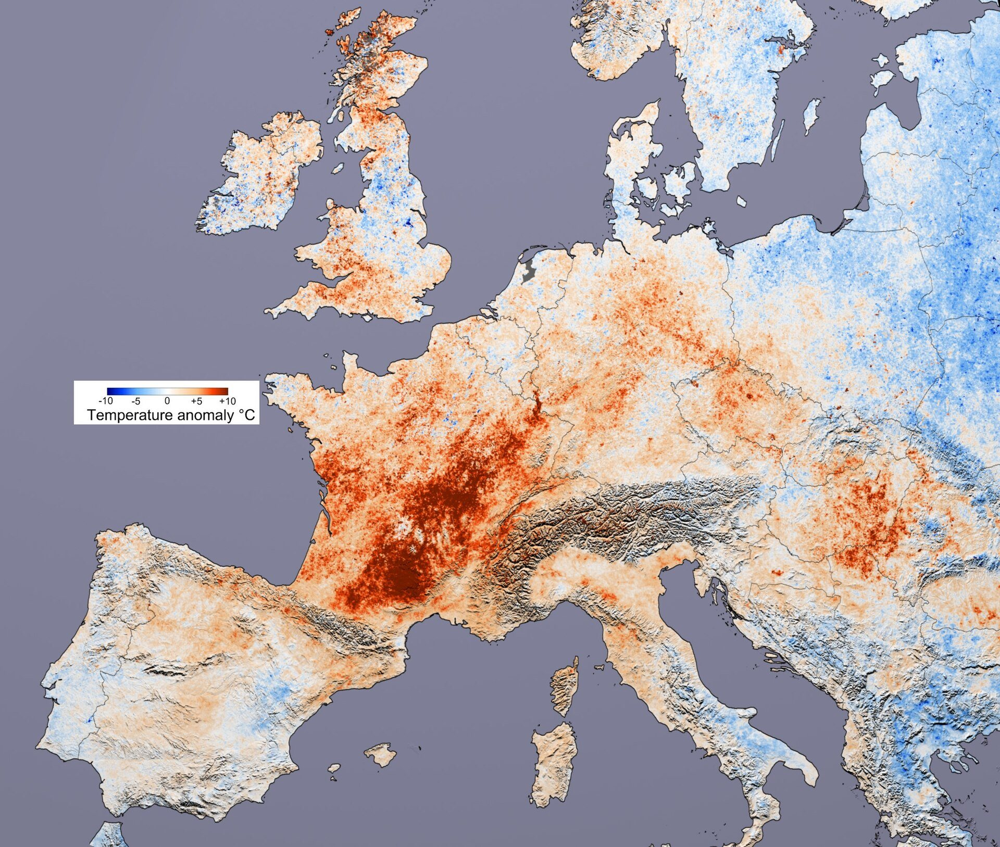
Calor do verão de 2026 pode ter matado mais de 50 mil pessoas em cidades europeias, estima análise
Análise estima mais de 50 mil mortes por calor em 854 áreas urbanas da Europa, quase o dobro de 2022. São estimativas de modelo.
MundoOnda de calor: o que é um domo de calor, por que as cidades esquentam mais e como se proteger
Como se forma uma onda de calor, o que é o "domo de calor", por que as cidades esquentam mais e quais são os cuidados que fazem diferença.
MundoMoçambique aprova novo regime do trabalho doméstico, com contrato e salário mínimo
Contrato escrito, segurança social, férias e proteção contra assédio. Um espelho da nossa PEC das Domésticas.
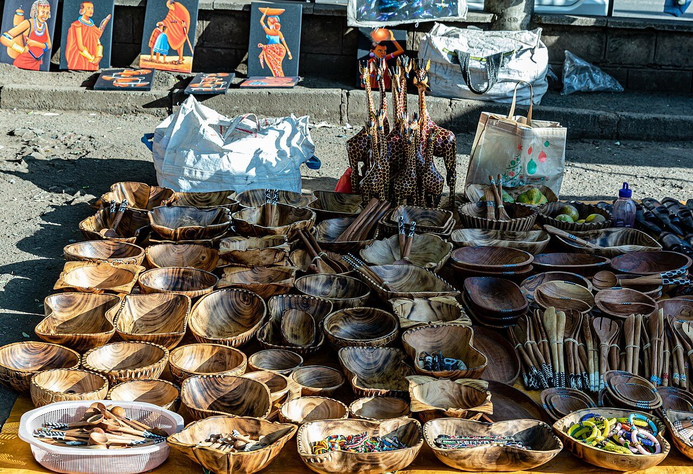
Quênia quer reservar o pequeno comércio para cidadãos, e reacende um debate africano
Ruto mandou afastar estrangeiros da venda ambulante; após o alvoroço, o governo amarrou a medida a uma lei.
MundoTurquia, Paquistão e Arábia Saudita firmam pacto de defesa no estilo OTAN
Um acordo no espírito do Artigo 5 une três potências e soma cerca de 1,4 milhão de militares.
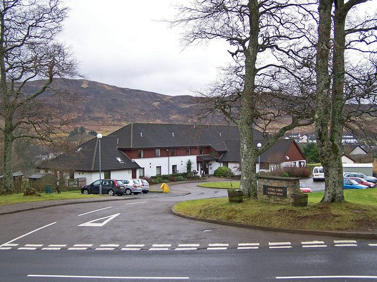
China cria um "sexto seguro" para cuidar dos idosos
Um seguro nacional de cuidados de longo prazo, e uma prévia de um debate que o Brasil vai ter.
MundoChina ultrapassa a Rússia e vira a maior parceira comercial da Ásia Central
Pequim avança sobre o quintal histórico de Moscou e redesenha o mapa de influência da região.
Tecnologia
Inovação e energia →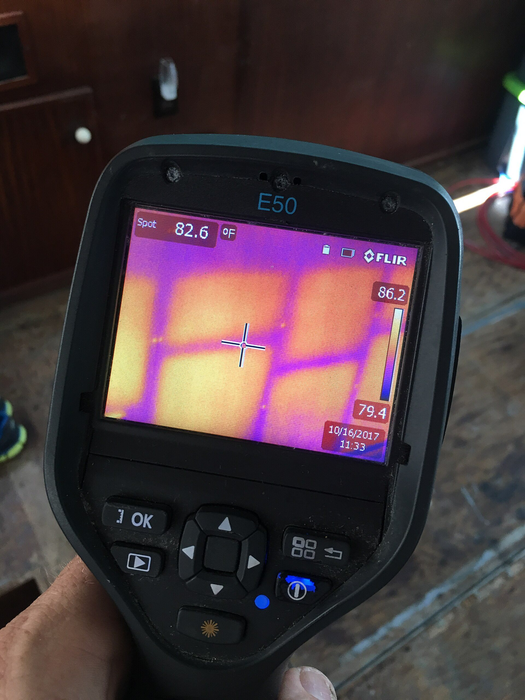
Capa térmica em 3D esconde objetos de câmeras de infravermelho, dizem pesquisadores
Uma capa de alumínio e borracha guia o calor ao redor de um objeto e o faz 'sumir' para câmeras de infravermelho. A equipe diz ser a primeira em 3D.
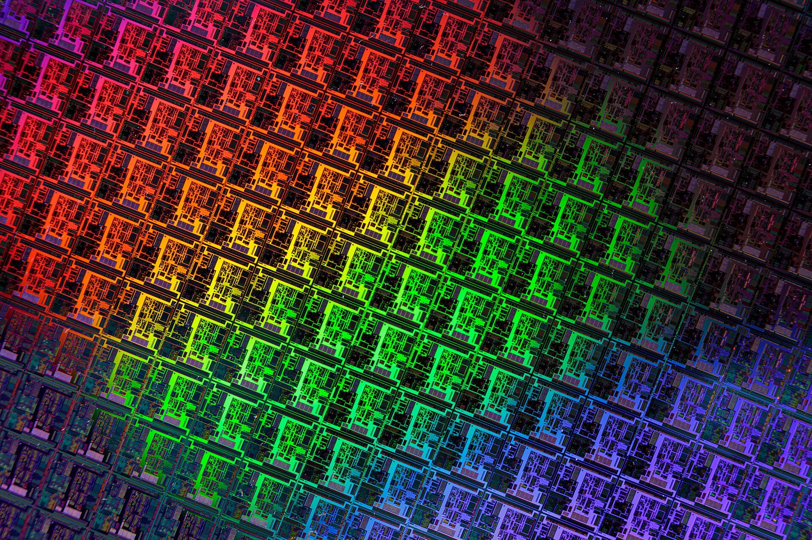
Técnica de calibração mantém qubits de silício com cerca de 99,9% de precisão operando ao mesmo tempo
Cinco qubits de silício operando ao mesmo tempo mantiveram cerca de 99,9% de fidelidade, no melhor resultado de um estudo do RIKEN.
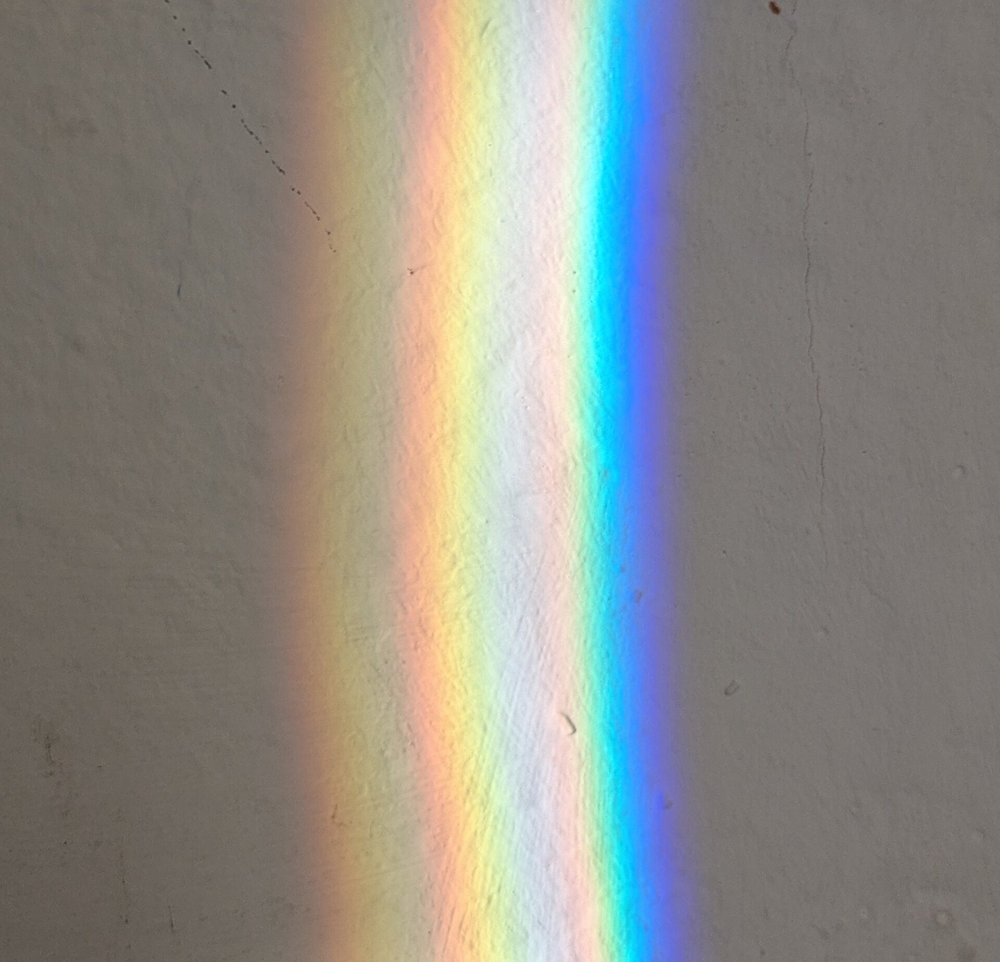
Cambridge cria espectrômetro de cerca de US$ 10 que identifica materiais em testes de laboratório
Sensor de poucos centímetros e cerca de US$ 10 identificou plásticos, remédios, café e farinha em testes. A glicose foi testada em uma pessoa.
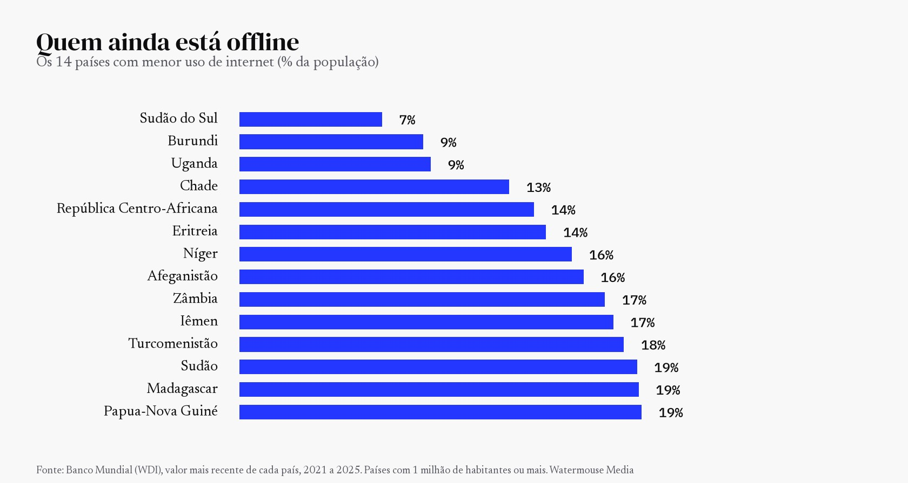
Em 43 países, menos da metade da população usa internet, e 34 deles ficam na África Subsaariana
43 países com 1 milhão de habitantes ou mais têm menos da metade da população conectada. A maioria está na África Subsaariana.
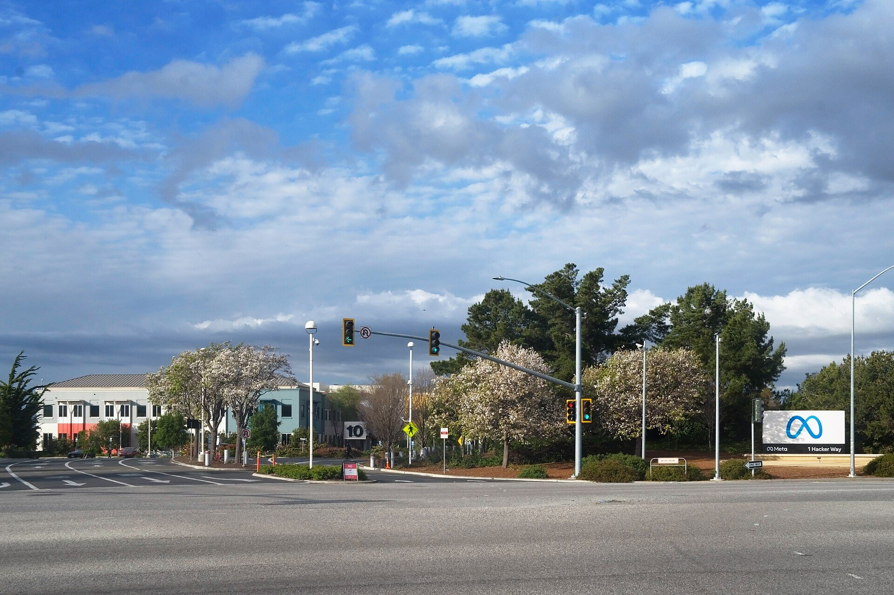
Meta deve pagar US$ 25 bilhões ao Novo México, informa a AFP; empresa vai recorrer
A France 24 informa que um juiz mandou a Meta pagar US$ 25 bilhões ao estado. A empresa fala em "imposto sobre a fala" e vai recorrer.

Google Play passa a rodar apps criados por IA no seu próprio celular, sem conta de desenvolvedor
Apps feitos com IA no AI Studio podem ser instalados pela Play Store em modo privado, sem conta de desenvolvedor.
TecnologiaComo funciona um assistente de IA: do texto à "próxima palavra", e por que ele às vezes inventa
Como os modelos de linguagem são treinados, por que "alucinam", quais são seus limites e como conferir o que eles dizem.
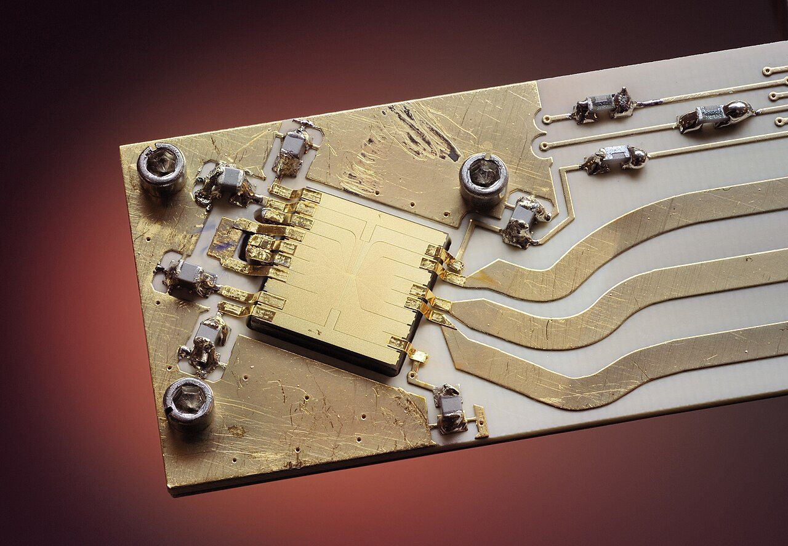
Computação quântica sem mistério: o que é um qubit, o que ela faz de verdade e o que ainda não faz
O que é um qubit, para que servem os computadores quânticos, por que os erros são o principal obstáculo e como ler as manchetes sobre o assunto.
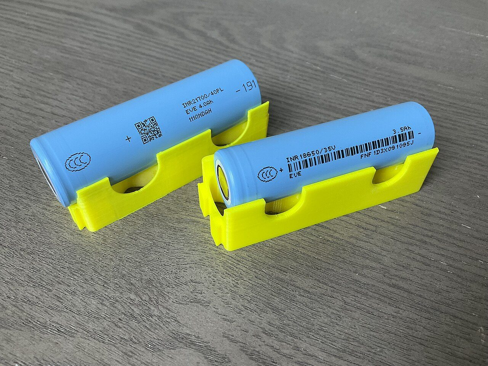
Como funciona uma bateria de íon-lítio e por que o sódio entrou na conversa
O que acontece dentro de uma bateria de íon-lítio, por que ela perde capacidade com o tempo e o que as químicas de sódio e de ferro-fosfato mudam no jogo.
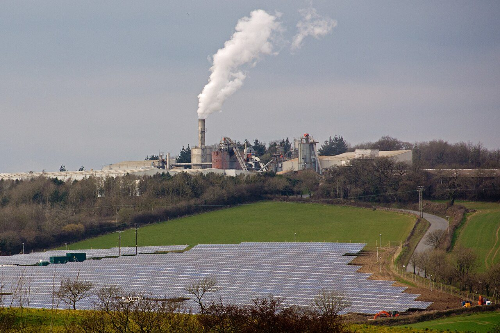
Novo material gera hidrogênio só com luz do sol, sem metal caro
O BVR-19, da Oregon State, usa a luz para quebrar a água e dispensa os catalisadores de metais raros e caros.
Tecnologia"Everything-to-grid": carros e casas que devolvem energia à rede
A energia bidirecional foi eleita a tecnologia emergente número 1 de 2026 pelo Fórum Econômico Mundial.
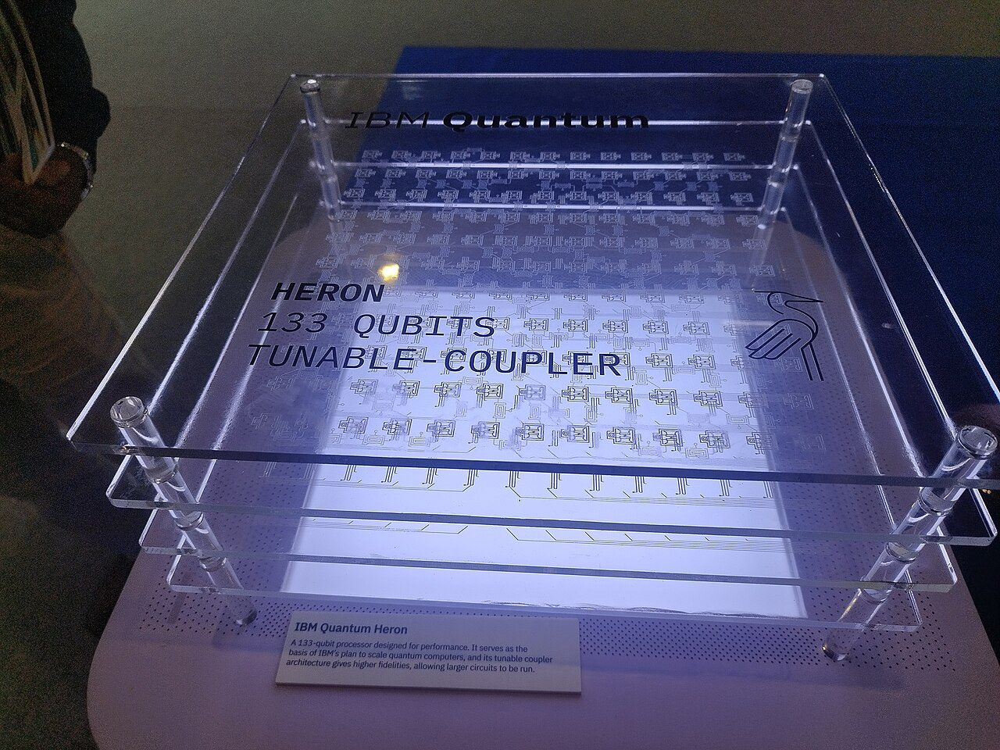
Operações quânticas 1.000 vezes mais rápidas: o avanço que encurta a corrida
Um novo método acelera drasticamente as operações e aproxima o computador quântico útil.
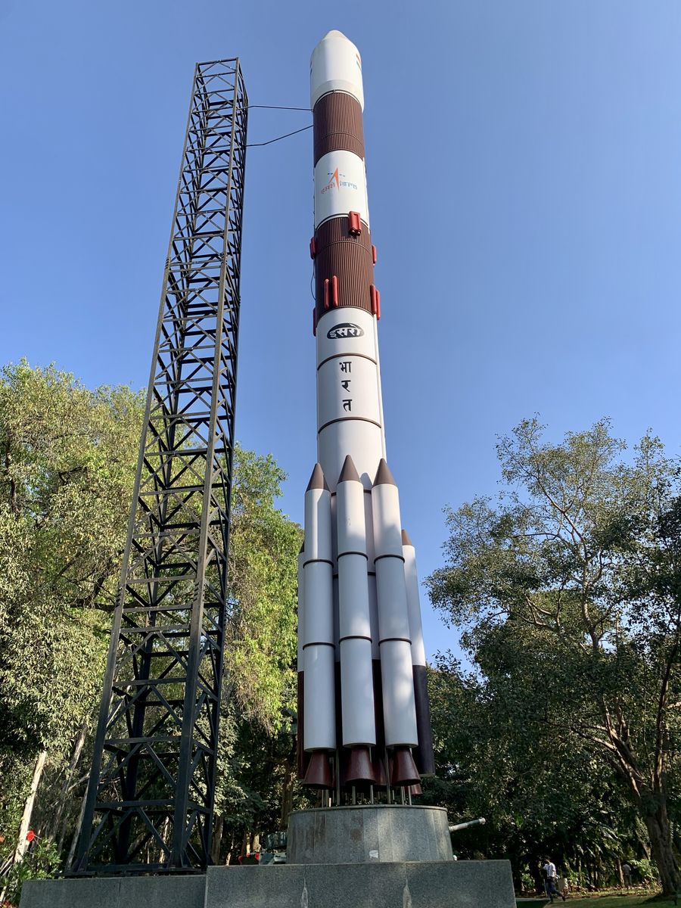
A Índia vira potência de deep tech e espaço, com US$ 1,6 bi em um ano
Nove startups indianas entram na lista de Pioneiras da Tecnologia do Fórum Econômico Mundial.
TecnologiaBateria de sódio, sem lítio, passa nos testes de segurança da Hyundai
A startup Unigrid validou com a Hyundai uma bateria barata que não pegou fogo e aguenta de -20°C a 60°C.
TecnologiaCom 13 íons, um computador quântico recriou matéria "surgindo do nada"
Físicos da Duke reproduziram a formação de partículas a partir de energia, algo ligado ao início do universo.
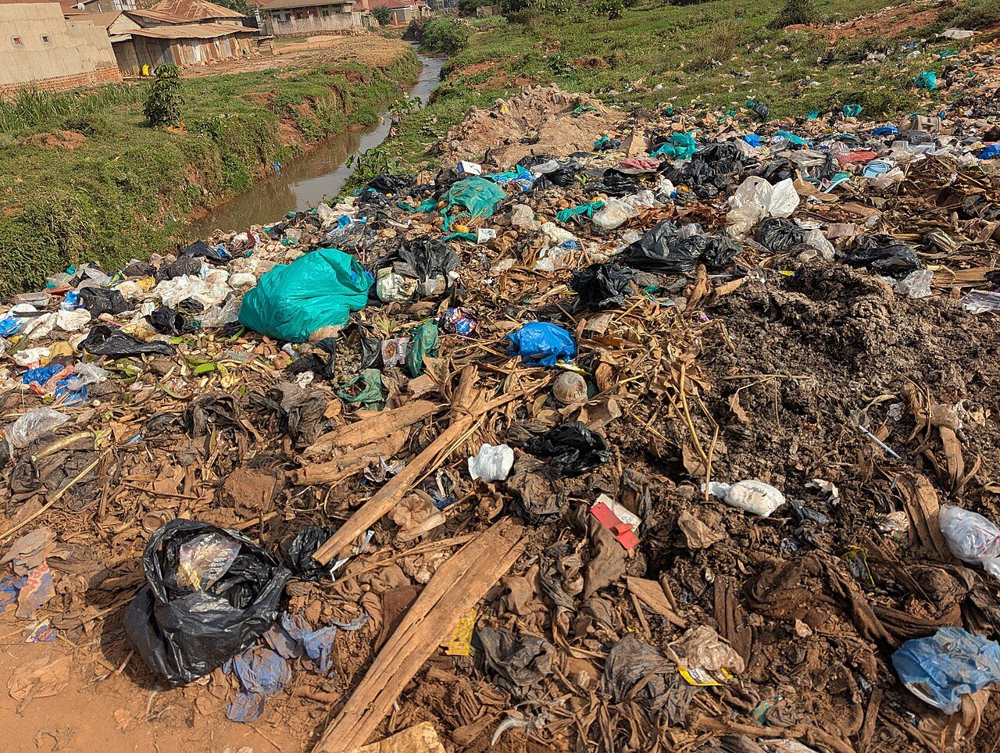
Novo processo transforma sacola plástica em gasolina e diesel
Sais de alumínio derretidos quebram o polietileno em combustível a menos de 200°C, com ~60% de rendimento.
Ciência
Saúde e descobertas →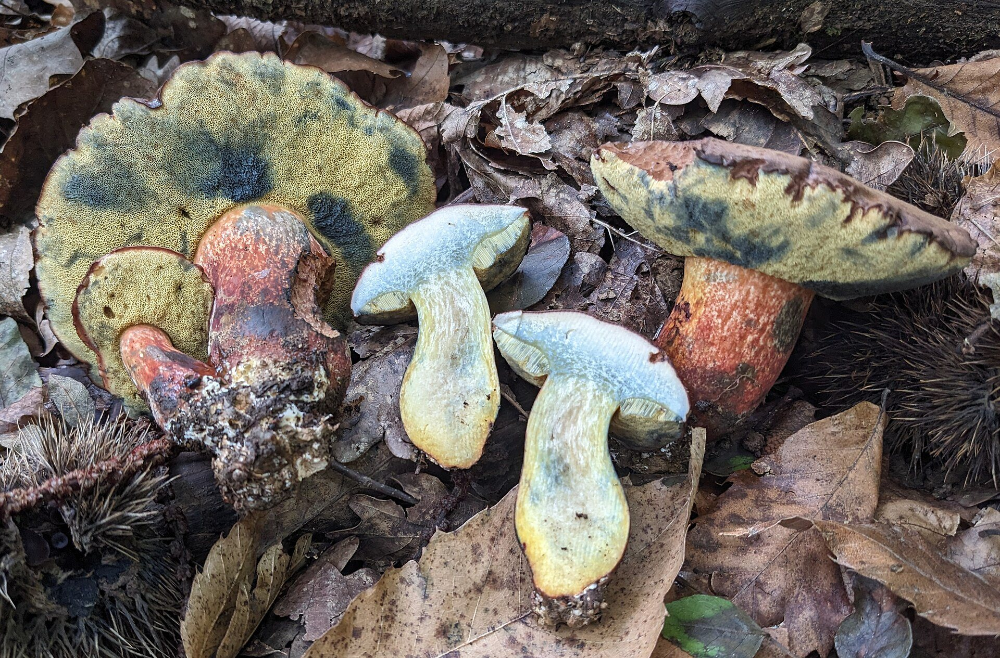
Cogumelo que faz pessoas verem centenas de figuras minúsculas é identificado por DNA, e a substância responsável segue desconhecida
A Lanmaoa asiatica, no sudoeste da China e nas Filipinas, está ligada a alucinações com figuras minúsculas. A substância responsável não foi identificada.
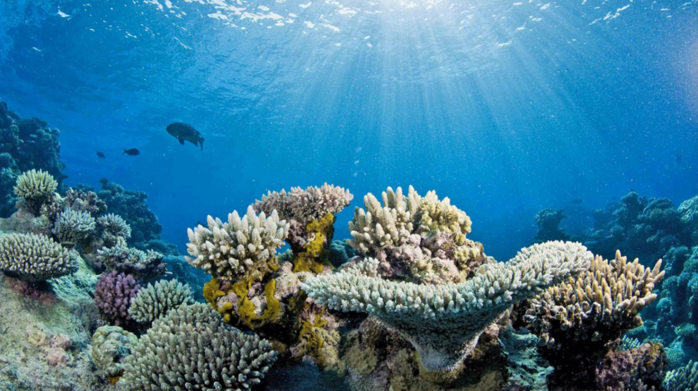
Todos os recifes rasos da Austrália correm risco 'extremamente alto' de colapso até 2075, diz avaliação da UICN
A UICN classifica como criticamente ameaçados os 17 ecossistemas de recifes de coral da Austrália, com risco extremamente alto de colapso até 2075.
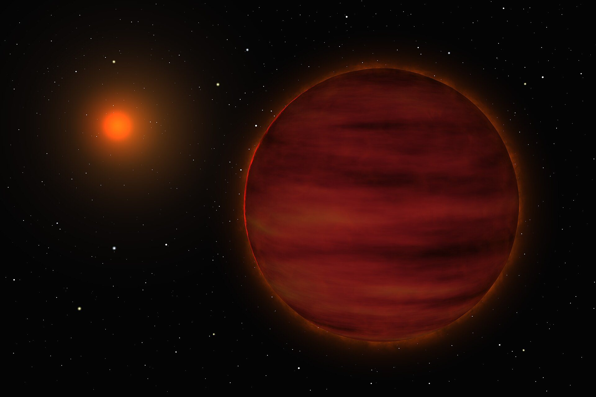
Astrônomos relatam a primeira detecção plausível de uma lua fora do Sistema Solar
Um corpo com pelo menos a massa de Júpiter pode orbitar uma anã marrom perto da estrela CD-35 2722, segundo um estudo na Nature. Falta confirmar.
CiênciaAspirina em baixa dose se associou a menos demência em um subgrupo genético, mas com o dobro de sangramentos graves
Em um subgrupo com escore genético alto de plaquetas, a demência apareceu em 1% (aspirina) contra 3,3% (placebo), mas os sangramentos graves dobraram.
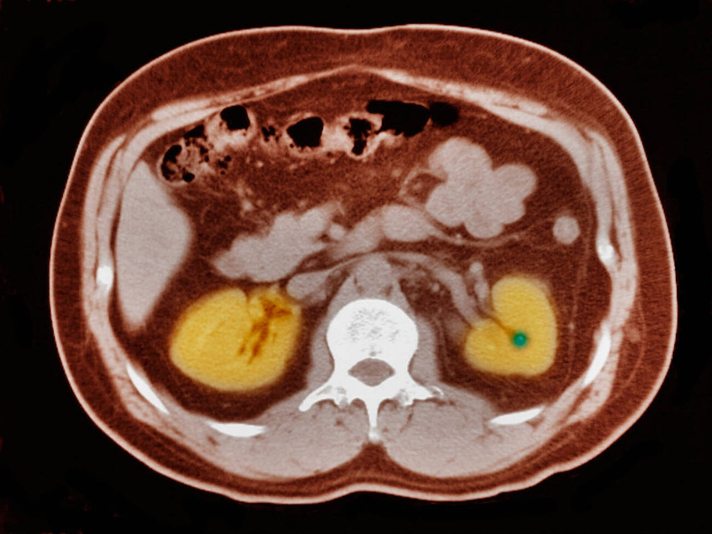
IA detectou sinais de câncer de pâncreas em tomografias cerca de 15 meses antes do diagnóstico, em estudo com exames antigos
Em tomografias de pacientes diagnosticados depois, a IA REDMOD achou sinais de câncer de pâncreas, em média, 475 dias antes do diagnóstico.
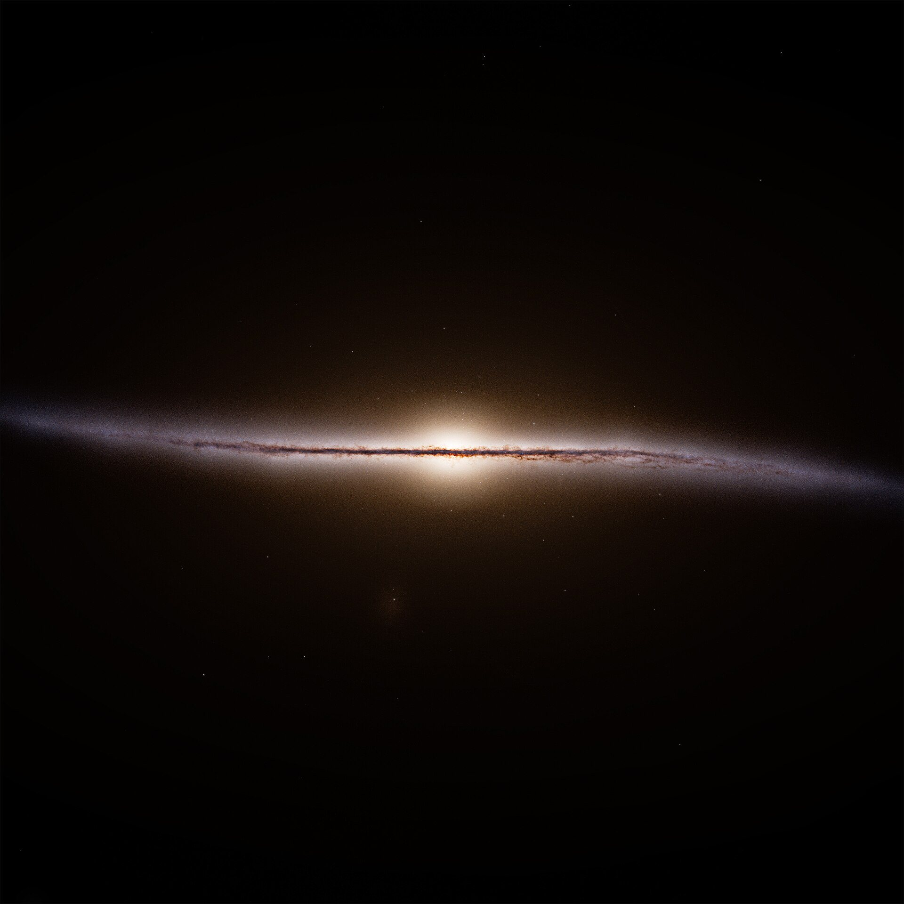
Disco da Via Láctea pode ter crescido de cabeça para baixo, com estrelas mais jovens em camadas cada vez mais finas
Dados do Gaia indicam que o disco da Via Láctea se formou de dentro para fora: estrelas mais jovens surgiram em camadas cada vez mais finas.
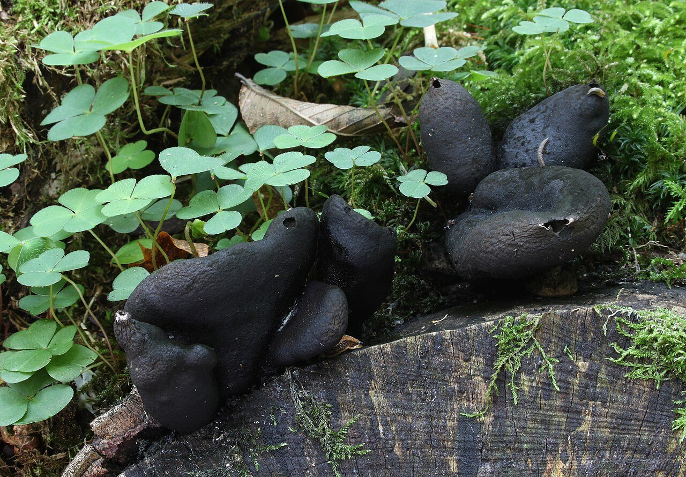
Fungo gigante 'D-rex', descoberto na China, forma estruturas de até 50 cm e dá nome a uma nova família
Descrito na China, o fungo Dianjunus rex forma estruturas de até 50 cm e 2,2 kg, as maiores entre os ascomicetos.
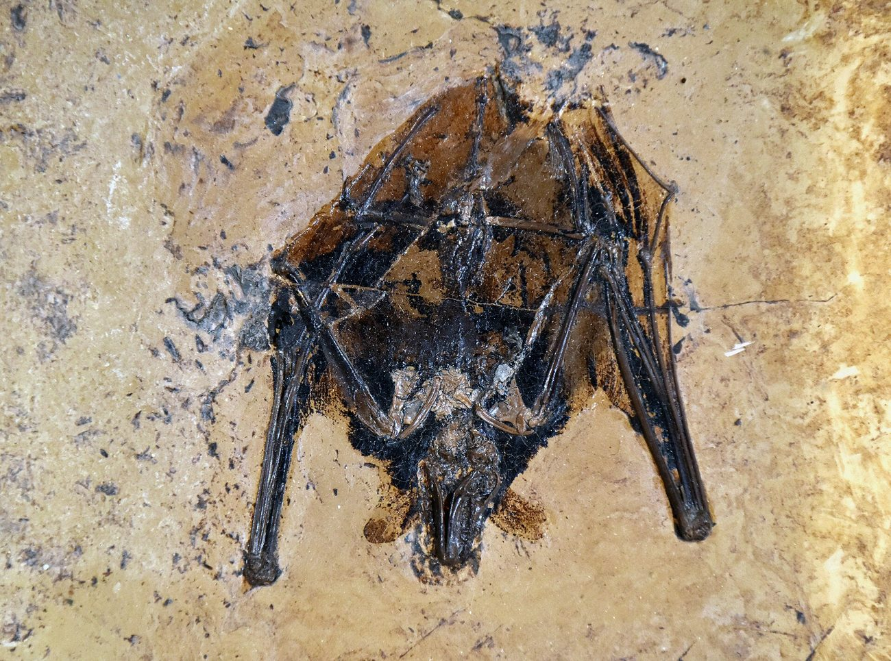
Morcegos podem ter surgido na Europa há 60 a 65 milhões de anos, indica análise de 103 genomas e 44 fósseis
Um estudo na Nature cruza 103 genomas e 44 fósseis e sugere que os morcegos surgiram na Europa e se espalharam primeiro pela África.
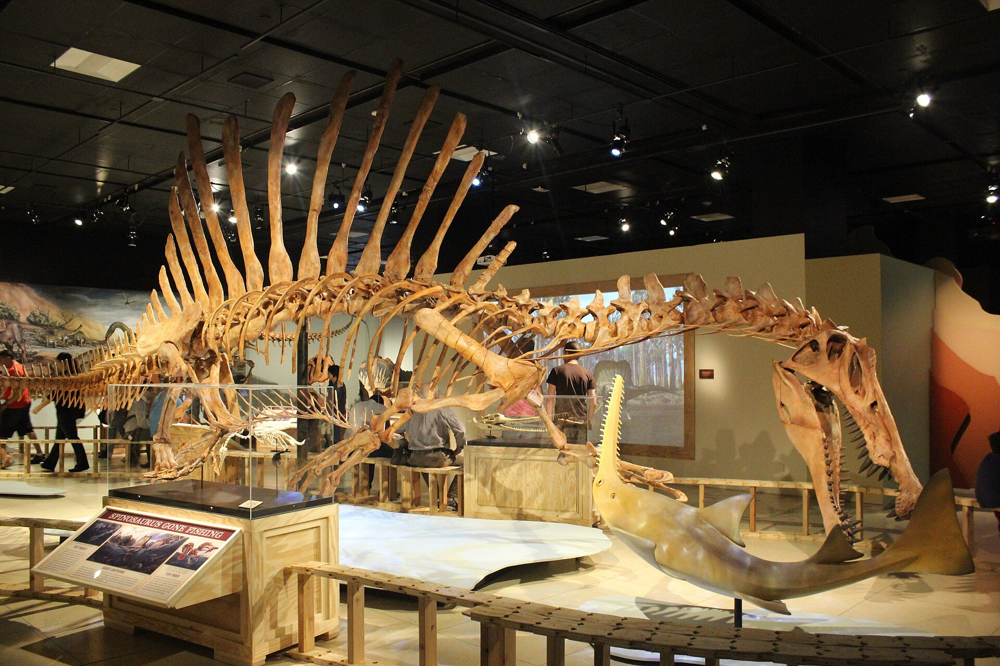
Estudo com aprendizado de máquina reforça que o espinossauro passava a maior parte do tempo na água
Mais de 11 mil medições de fósseis e animais atuais indicam que o espinossauro vivia boa parte do tempo submerso. Como ele caçava segue em aberto.
CiênciaWebb encontra três buracos negros supermassivos ativos em uma mesma galáxia distante
Observações do Webb indicam três buracos negros ativos numa galáxia a mais de 12,5 bilhões de anos-luz. O par central deve se fundir.
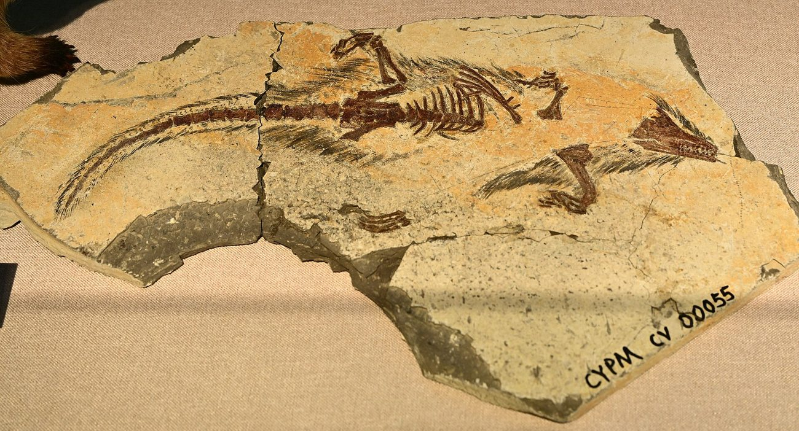
Fóssil de 165 milhões de anos revela um parente dos mamíferos que nadava e pesava cerca de 2 quilos
Um mamaliaforme jurássico de uns 50 cm e 2 kg, o maior conhecido do período, tinha palato mole e provavelmente nadava, segundo estudo na Nature.
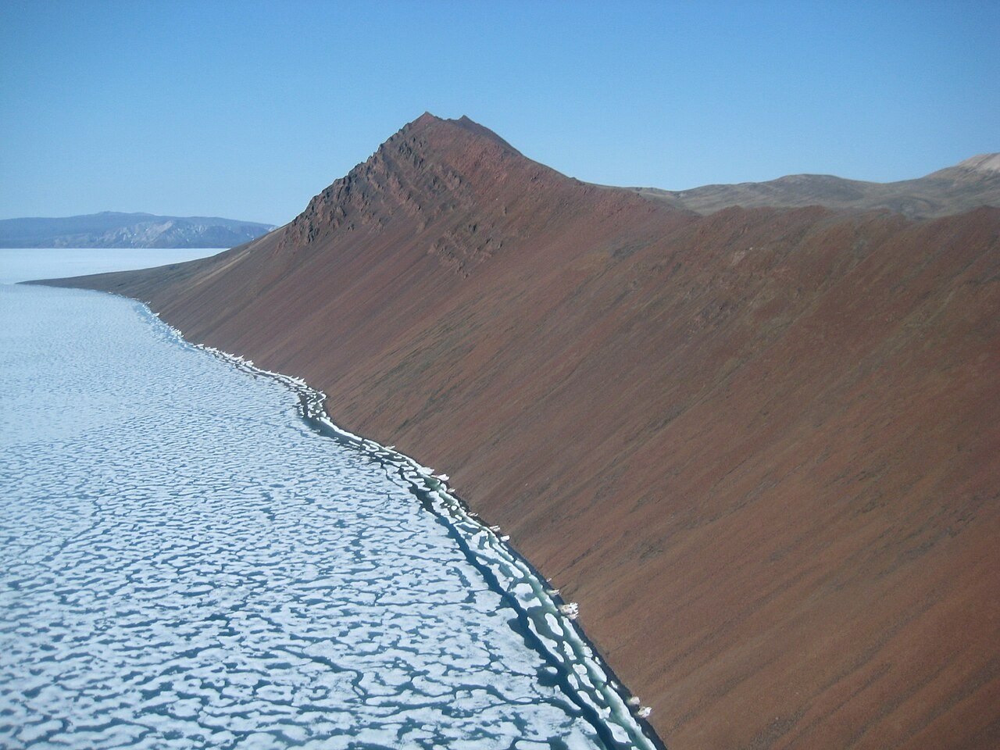
Gelo marinho do Ártico no inverno pode encolher mais do que se previa, sugere estudo com sedimentos de 6 mil anos
Sedimentos marinhos de cerca de 6 mil anos indicam que modelos superestimam o gelo do Ártico no inverno: projeção futura cai cerca de 1 milhão de km².
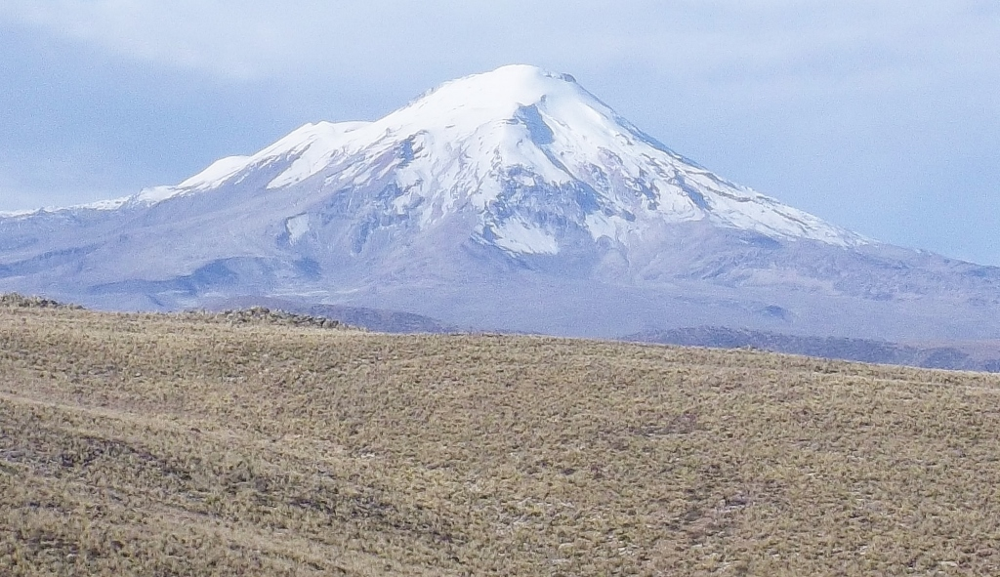
Análise de múmias incas identifica as substâncias usadas na capacocha, o principal ritual de sacrifício
Cocaína em todas as oito múmias, álcool em quatro e harmina em uma sugerem que a capacocha variava conforme o lugar, segundo estudo na Antiquity.
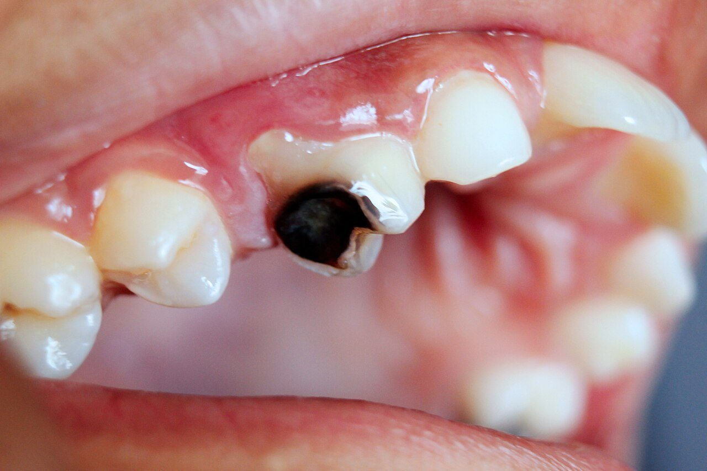
Líquido aplicado nos dentes de leite interrompeu cáries em mais da metade dos casos em estudo com 830 crianças
Aplicado a cada seis meses, o diamino fluoreto de prata interrompeu a cárie em mais da metade dos dentes de leite afetados, num estudo com 830 crianças.
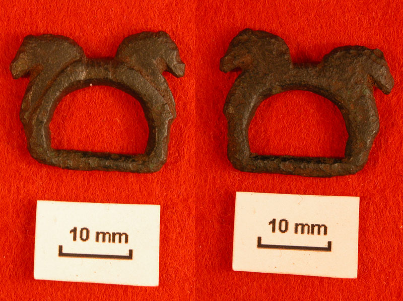
DNA antigo revela hanseníase em homem enterrado em um barco na Alemanha do século 5
Um homem do Danúbio, enterrado em um barco perto do Mar do Norte no século 5, carregava uma linhagem de hanseníase nunca vista antes na Europa Central e do Norte.
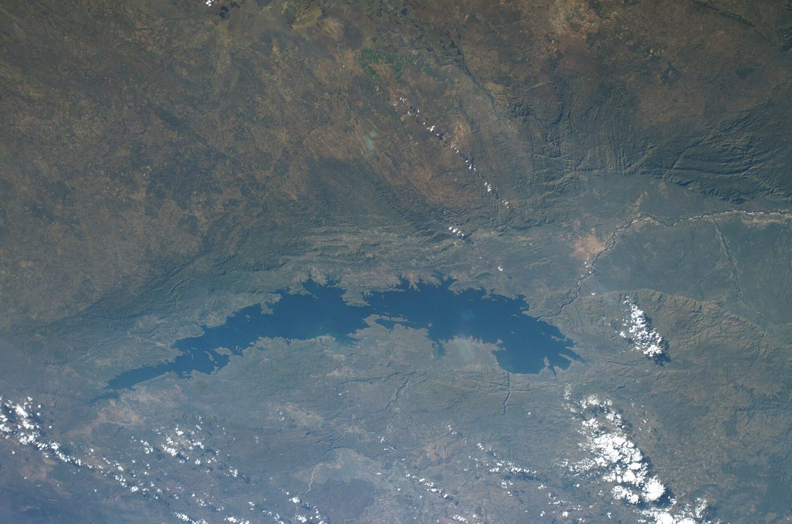
Dinossauro de 210 milhões de anos achado no Zimbábue sugere que a região tinha uma fauna própria
Um sauropodomorfo bípede de 210 milhões de anos, achado às margens do Lago Kariba, reforça que o Zimbábue tinha dinossauros distintos dos da África do Sul.
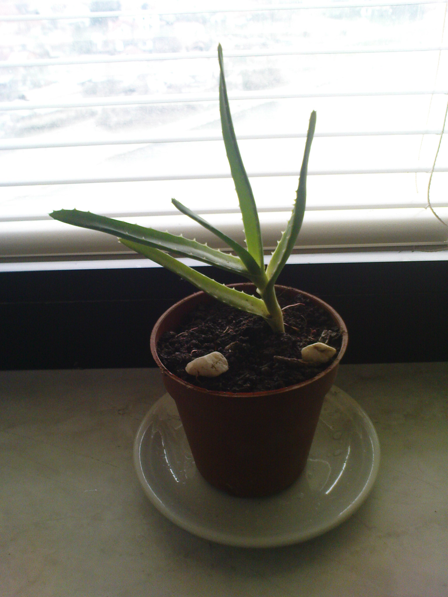
Cabeça mumificada de 2.700 anos traz a primeira evidência molecular de aloe no embalsamamento egípcio
Compostos de aloe apareceram em um crânio mumificado de cerca de 2.700 anos, mas só em 2 de 24 objetos analisados, segundo um estudo no PNAS.
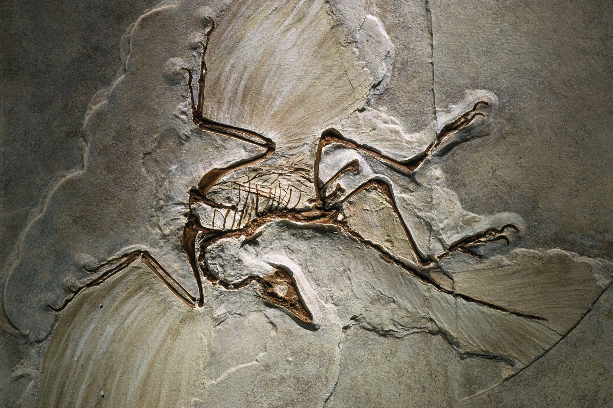
Ave de 150 milhões de anos tinha dentes de dinossauro e provavelmente não voava
Fóssil chinês de uma ave do tamanho de um corvo, com dentes serrilhados e garra em foice, aponta para um dos primeiros casos de ave sem voo.
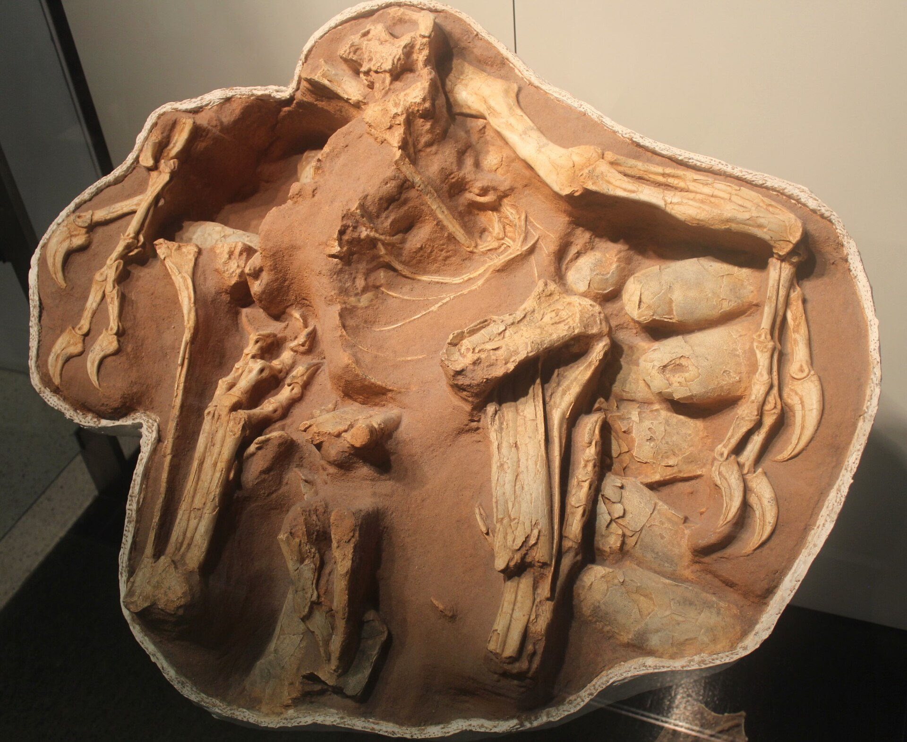
Dinossauro do tamanho de um peru pode ter sido o primeiro a se especializar em comer frutas
Infernogallus jamesi, de Hell Creek, tinha mandíbula que deslizava para trás e para frente, ideal para amassar frutas com caroço, segundo um novo estudo.
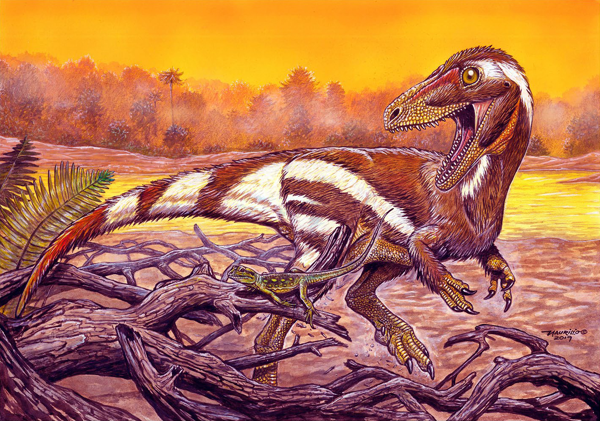
Osso de dinossauro de 115 milhões de anos preserva vestígios químicos de glóbulos vermelhos
Estudo no PNAS aponta glóbulos vermelhos mineralizados e sinais de heme em um osso de dinossauro brasileiro de 115 milhões de anos.
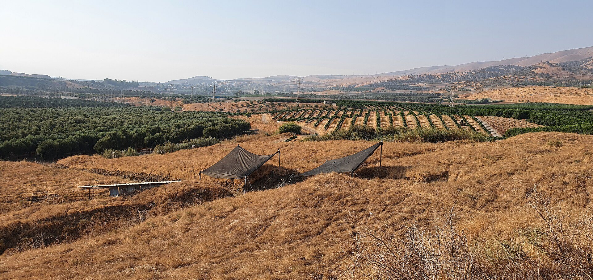
Sítio de 'Ubeidiya, no Vale do Jordão, tem pelo menos 1,9 milhão de anos, indica nova datação
Uma nova datação indica que um sítio pré-histórico no Vale do Jordão tem pelo menos 1,9 milhão de anos, mais antigo que se pensava.
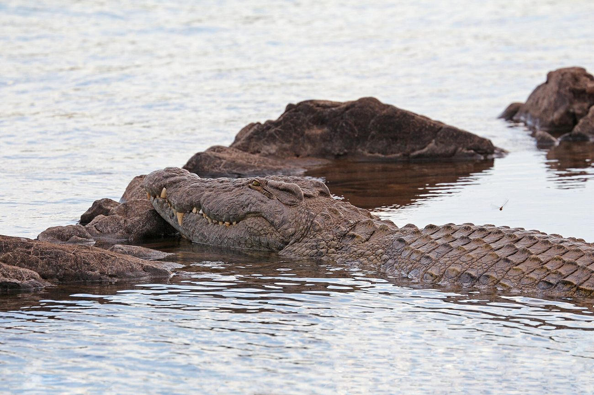
Por que os crocodilianos sobreviveram ao asteroide que matou os dinossauros? Estudo da UCL aponta o clima quente
Estudo da UCL sugere que os crocodilianos seguiram climas quentes por milhões de anos e que os trópicos serviram de refúgio depois do asteroide.
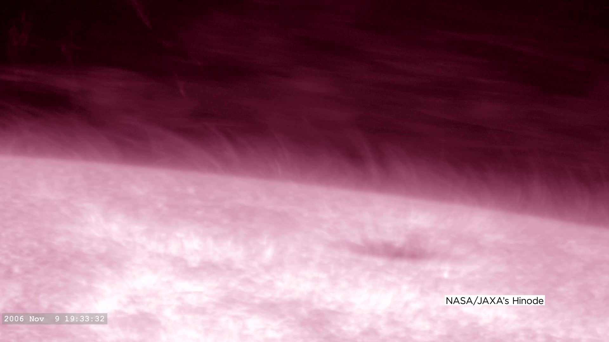
Telescópio em balão flagra uma teia de fios magnéticos finos acima de uma região calma do Sol
Medições de um telescópio em balão mostram estruturas magnéticas finas sobre uma região calma do Sol, na cromosfera.
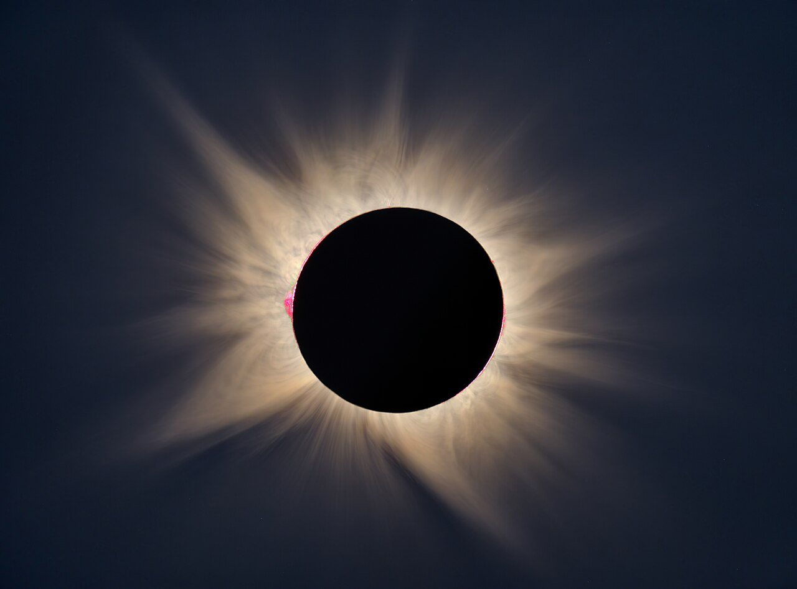
Eclipse de 2.700 anos registrado na China corrige a posição de uma cidade antiga e refina a rotação da Terra
Uma correção de cerca de 8 km na posição da antiga Qufu permitiu reconstruir o eclipse total de 709 a.C. e refinar a rotação da Terra.
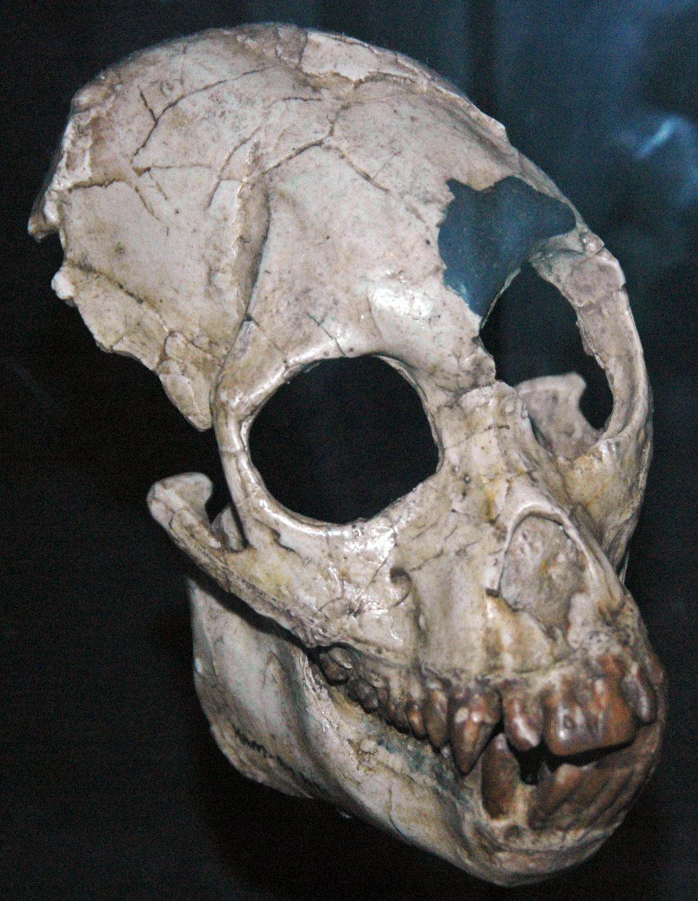
Fóssil de 17 milhões de anos achado no Egito reabre o debate sobre onde viveu o ancestral dos grandes primatas
A espécie Masripithecus moghraensis, de 17 a 18 milhões de anos, desafia a ideia de que os apes surgiram na África Oriental.
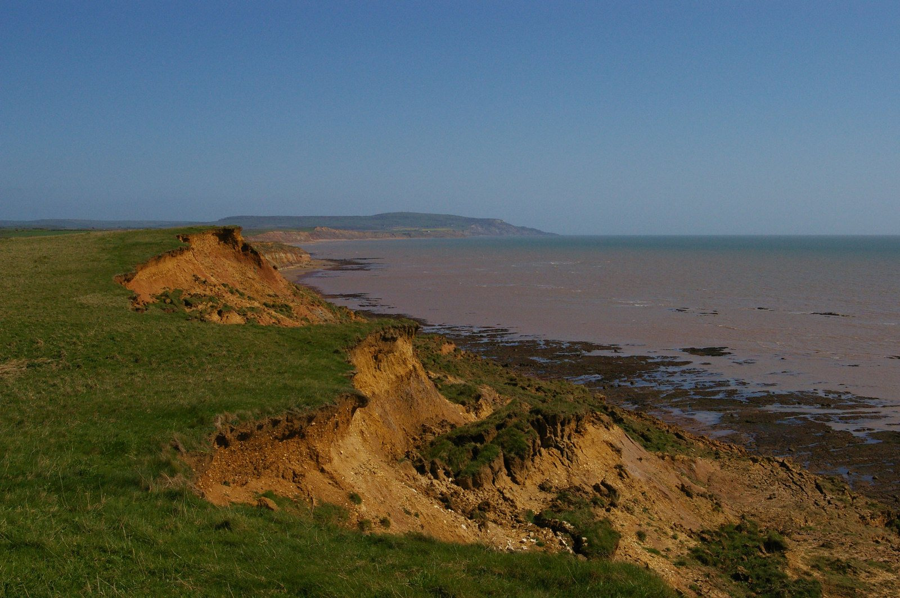
Osso guardado há mais de 100 anos revela o primeiro megaraptor da Europa
Uma caixa craniana esquecida num museu de Londres virou o primeiro megaraptor conhecido da Europa, de cerca de 120 milhões de anos.
CiênciaTrem atrasado por tempestade solar em Exeter foi em 1848, e não em 1841, concluem pesquisadores
Uma tempestade solar atrasou um trem em Exeter, mas em 1848, não em 1841: a linha só abriu em 1846. Um erro de digitação de 1871, segundo os autores.

Fóssil de Drimolen reforça que o Homo erectus já estava na África do Sul há cerca de 2 milhões de anos
Um fóssil adulto de Drimolen, na África do Sul, tem cerca de 2 milhões de anos e reforça que o Homo erectus é mais antigo do que se acreditava.
CiênciaSalamandras-de-fogo brilham em verde e ciano sob luz ultravioleta, e a secreção tóxica da pele também fluoresce
A salamandra-de-fogo fluoresce em verde e ciano sob luz UV, e as secreções tóxicas da pele também. A função do brilho é desconhecida.
CiênciaGenes saltadores podem ter ajudado as formigas a se diversificar depois do asteroide que matou os dinossauros
Genomas de 163 formigas ligam elementos transponíveis, os genes saltadores, à explosão de espécies após o impacto de 66 milhões de anos atrás.
CiênciaCobras minúsculas rolam até quatro vezes mais rápido do que se arrastam, e mantêm a cabeça quase estável
Uma cobra anã do Sudeste Asiático rola a até 3,69 m/s para fugir de predadores, com a cabeça relativamente estável.
CiênciaLaser ultravioleta em átomos de hélio gera raios X além do limite previsto para um elétron, relatam TU Wien e UC San Diego
Pulsos de laser ultravioleta em hélio produziram raios X acima do limite previsto pela teoria de um elétron. É uma extensão do modelo, não o fim da física.
CiênciaMeteoros não apenas queimam: análise de 75 quedas descreve sete fases em que fusão e fragmentação mandam
Uma análise de 75 quedas de meteoritos descreve sete fases da entrada na atmosfera. Fusão e fragmentação, mais que evaporação, controlam a perda de massa.
CiênciaWebb mede que o planeta de lava TOI-561 b reflete cerca de 75% da luz da estrela, índice comparável ao de Vênus
O Webb observou o TOI-561 b por 37 horas e mediu que ele reflete cerca de 75% da luz estelar. Nuvens de silicato são a hipótese dos modelos.
CiênciaAmostras de Bennu apontam origem "híbrida" e levam a uma hipótese sobre o papel de Júpiter
Bennu, Ryugu e meteoritos raros compartilham a mesma assinatura química. Os autores propõem que Júpiter ajudou a moldar essa poeira.
CiênciaMagma pode guardar bem mais oxigênio do que se pensava, sugere experimento sob alta pressão
Experimento com basalto sintético mostra que magma pode absorver oxigênio além do esperado sob pressões extremas. Falta ver o que ocorre em magmas naturais.
CiênciaArtigo teórico propõe que a expansão acelerada do Universo pode sair das equações de Einstein, sem energia escura
Pesquisadores da UC Davis dizem que o modelo-padrão do Universo é instável e propõem explicar a aceleração sem energia escura. Falta testar com dados.
CiênciaDados da sonda Juno mostram que Júpiter freia o vento solar com ondas mais complexas que as da Terra
A Juno mediu ondas de plasma no choque de proa de Júpiter e achou um mecanismo mais rico em frequências do que o da Terra.
CiênciaSimulação mostra reservas do fundo do Pacífico isoladas demais, e poucos corredores poderiam ligá-las
Simulação do Plymouth Marine Laboratory mostra as 13 reservas do fundo do Pacífico quase desconectadas. Poucos corredores as ligariam.
CiênciaMatéria escura e energia escura: o que sabemos sobre os 95% do Universo que não vemos
O que são matéria escura e energia escura, que evidências existem, quais são as hipóteses e como ler as notícias sobre "tensões" na cosmologia.
CiênciaSupervulcões: o que são, como se mede o tamanho de uma erupção e qual é o risco real
O que é um supervulcão, como funciona a escala VEI, quais são os casos conhecidos e por que o risco imediato é baixo, mas o assunto merece atenção.
CiênciaComo funciona o sono: fases, sono REM e por que sonhamos
As fases do sono, o que muda no sono REM, o que se sabe sobre os sonhos e hábitos simples que ajudam a dormir melhor.
CiênciaWebb e Hubble: o que cada telescópio enxerga e por que o infravermelho muda a história do Universo
Por que o Webb olha em infravermelho, o que isso permite ver e por que ele complementa o Hubble em vez de substituí-lo.
CiênciaComo ler uma notícia de ciência: nove perguntas antes de acreditar e compartilhar
Nove perguntas simples para fazer a qualquer estudo noticiado: quem foi estudado, quantos, comparado com o quê e o que os autores admitem não saber.
CiênciaCristais minúsculos registraram a radiação em volta da Lua na missão Artemis I
Cristais de fluoreto de lítio voaram na Orion e mediram a radiação perto da Lua. A diferença para a órbita da Terra é menor que o esperado.
CiênciaMaior catálogo de supernovas já reunido sugere que a energia escura pode mudar com o tempo
2.884 supernovas do tipo Ia, observadas em cerca de 30 anos, dão mais indícios de que a energia escura varia. Ainda são preprints.
CiênciaPartículas radioativas de Chernobil resistiram 40 anos mais estáveis do que se esperava
Estudo com raios X em seis partículas de Chernobil mostra combustível mais estável que o esperado. Os autores pedem cautela.
CiênciaGeleiras suíças perderam quase 20% do gelo em cinco anos, mostra relatório
Relatório suíço mostra perda de mais de 5% do gelo em 2026 e de quase 20% em cinco anos. Duas geleiras desapareceram.
CiênciaSupervulcão japonês de Kikai está se reabastecendo de magma, mostra estudo
Imagens sísmicas sob o mar mostram magma novo sob a caldeira que explodiu há 7.300 anos. Os autores descartam erupção iminente.
CiênciaFísicos medem pela primeira vez uma "escada de energia" quântica prevista há 40 anos
Com átomos presos por laser, Caltech confirmou na prática uma teoria de quatro décadas que nunca tinha sido medida diretamente.
CiênciaO cérebro humano é, na verdade, dois órgãos antigos que a evolução colou
A parte que pensa e a parte que mantém você vivo nasceram de linhagens celulares diferentes.
CiênciaLong COVID danifica neurônios de dopamina, mostra imagem cerebral
Exames de imagem apontam menos terminais de dopamina em áreas-chave do cérebro de quem tem COVID longa.
CiênciaCoração humano regenera músculo após infarto, mostra estudo inédito
O achado derruba um velho dogma e abre caminho para tratar a insuficiência cardíaca.
CiênciaAntidepressivos nos rios afetam peixes mais que humanos, mostra estudo
Resíduos de remédios mudam o comportamento dos peixes e acendem um alerta ambiental.
CiênciaA força que some com a idade começa num "fio solto" entre nervo e músculo
Parte da fraqueza da velhice vem da falha nervo-músculo, e cientistas conseguiram reverter em laboratório.
CiênciaAs primeiras estrelas podem explicar as galáxias "estranhas" do James Webb
Estrelas gigantes pobres em metais têm ventos bem mais fracos que o previsto, e isso muda tudo.
CiênciaSonhar pode gastar a energia do cérebro mais rápido do que ele repõe
No sono REM, chega mais combustível ao cérebro, mas a energia dos neurônios cai. Um paradoxo.
CiênciaO maior medo sobre a mamografia pode ter sido superestimado por décadas
Uma reanálise põe o sobrediagnóstico abaixo de 5%, contra estimativas antigas de 30% a 50%.
CiênciaCientistas acham a "célula-mãe" de tendões e ligamentos
Os tecidos que cicatrizam mal ganham uma pista; a mesma célula, hiperativa, explica a estenose espinhal.
CiênciaA lua Encélado pode "preparar a amostra" e facilitar a busca por vida
O gelo que a lua de Saturno cospe ao espaço já vem com os compostos do oceano separados e concentrados.
Negócios
Economia e mercados →África do Sul reduz imposto sobre combustíveis depois de preços recordes nas bombas
O corte no imposto sobre combustíveis custa 10 bilhões de rands e vale de 4 de novembro a 1º de dezembro, segundo o governo sul-africano.
NegóciosDangote diz ter comprado 25% da Kenya Pipeline Company
Dangote anunciou a compra de 25% da Kenya Pipeline Company. Preço e termos não foram informados.
NegóciosExportações de Uganda sobem 36% em agosto, puxadas pelo ouro
Receita de US$ 1,5 bilhão em agosto, com US$ 889 milhões só em ouro, segundo o Ministério das Finanças de Uganda.
NegóciosComércio entre África do Sul e China sobe cerca de 24% com a tarifa zero, diz embaixador chinês
Comércio de quase US$ 15 bilhões em quatro meses, segundo a embaixada chinesa. O acordo de tarifa zero é temporário.
NegóciosHidrogênio verde, cinza e azul: o que significam as cores e qual é a chance do Brasil
Como o hidrogênio é produzido, o que as cores querem dizer, onde ele pode substituir combustíveis fósseis e o que o Brasil tem a favor e contra.
NegóciosMoeda única regional: o que o franco CFA e o euro ensinam sobre a ideia do eco
Como funcionam o franco CFA e o euro, quais são as vantagens e os riscos de uma moeda compartilhada e por que o eco da África Ocidental ainda depende de condições difíceis.
NegóciosONU lança acelerador global para as redes elétricas que travam a energia limpa
Há 2.500 GW de projetos renováveis parados em filas de conexão. A iniciativa mira África e Sudeste Asiático.
NegóciosBanco asiático liderado pela China faz seu 1º grande acordo plurianual na África
AIIB e Benin fecham pipeline de US$ 730 mi: sinal de que o Sul Global diversifica quem o financia.
NegóciosEólica e solar superam os fósseis na União Europeia pela primeira vez
Em 2025, vento e sol geraram 30% da eletricidade do bloco, à frente dos combustíveis fósseis.
NegóciosUE proíbe rótulos "verde" e "eco" sem prova a partir de setembro
Cerco ao greenwashing que respinga em quem exporta para a Europa, inclusive do Brasil.
NegóciosGana aposta numa "economia 24 horas" para virar polo de produção
Um acordo com o Afreximbank vai destravar uma carteira de projetos de US$ 11,5 bilhões.
Negócios15 países da África Ocidental miram uma moeda única em 2027, a ECO
Um experimento monetário ambicioso que pode enterrar o franco CFA, ligado à França.
Cultura
História e linguagem →
Erupção que atingiu o Japão há 7.300 anos não destruiu todas as comunidades jomon, aponta estudo
Um estudo diz que a erupção de Kikai-Akahoya afetou as comunidades jomon de formas diferentes, e não só com destruição total.

Sulcos de carroças em Malta podem ser mais recentes do que se pensava, sugere estudo
Mais de 2.600 trilhas de sulcos no arquipélago maltês podem ser mais recentes do que se pensava, segundo uma análise com modelos 3D.

Pedras do Devil's Arrows vieram de rochedos a 18 km, e não da fonte mais próxima, indica estudo
As pedras de 25 toneladas do Devil's Arrows, na Inglaterra, foram arrastadas de Brimham Rocks, a cerca de 18 km, segundo uma análise de grãos minerais.

Centenas de visitantes acompanham o nascer do sol que ilumina a estátua de Ramsés II em Abu Simbel
Duas vezes por ano o sol ilumina a estátua de Ramsés II em Abu Simbel. Em 22 de outubro de 2026, centenas de pessoas assistiram.

Cidade maia de Ake continuou habitada por séculos depois do colapso, indica estudo
96 pequenas estruturas de postes e palha mostram que Ake, em Yucatán, seguiu habitada por séculos depois do colapso político.

Cão mumificado sem pelos de pelo menos 1.200 anos é achado no Peru, e a dieta de filhotes lembra a de crianças
Pesquisadores acharam um cão mumificado sem pelos, de ao menos 1.200 anos, em um sítio do Império Wari, no Peru.

Sarcófago romano de Westminster Abbey provavelmente guardava os restos de um monge medieval
Ossos num sarcófago romano de Westminster Abbey são do período saxão tardio (987 a 1052). Dois abades são os candidatos, mas a identificação é provisória.

Ossos de mão de neandertal bem preservados são achados em caverna do norte da Espanha
Ossos de mão de neandertal com colágeno, de cerca de 46 mil anos, foram achados na caverna de Abauntz, em Navarra, na Espanha.

Naufrágio de cerca de 4.500 anos na costa da Turquia pode ser o mais antigo do mundo
Jarras de cerâmica no fundo do mar, em Kekova, sugerem um naufrágio de cerca de 4.500 anos. A datação é provisória.

Impressões digitais sugerem que mulheres e jovens ajudaram a fazer o Exército de Terracota
Digitais na argila de 36 estátuas sugerem que não foram só homens adultos. É uma estimativa de modelo, de um único fosso.

Dente de elefante de quase 700 mil anos ajuda a reconstruir um refúgio na rota entre a África e a Eurásia
Um molar de elefante de quase 700 mil anos, achado em Israel, mostra um ambiente de bosques e água na rota entre a África e a Eurásia.

Como os arqueólogos sabem a idade de um achado: do carbono-14 às camadas do solo
Como se datam achados antigos: carbono-14, camadas do solo, anéis de árvores e luminescência, e como ler as margens de erro nas notícias.

Como se decifra uma escrita antiga: da Pedra de Roseta ao Linear B
O que é preciso para ler uma escrita perdida, como funcionaram os casos do egípcio e do Linear B e como avaliar alegações de novas decifrações.

A assinatura de um mestre canteiro de 700 anos emerge de um cemitério na Turquia
"Obra do Mestre Muhammed de Tabriz": a quarta assinatura de mestre achada no cemitério seljúcida de Gevaş.
Oficina de cobre de 9.000 anos na Turquia revela indústria já organizada no Neolítico
Em Çayönü, um espaço construído de propósito para processar minério: um dos registros mais antigos de produção especializada de metal.

Estátua de 11 mil anos mostra humano montado em leopardo em Karahantepe
A descoberta na Turquia amplia o que sabíamos sobre um dos sítios mais antigos do mundo.

Uma língua perdida ganha cinco letras e fica mais perto de ser lida de novo
O alfabeto do sidético, morto há 2 mil anos, sobe de 26 para 31 sinais na Turquia.
Autodidata diz ter decifrado o Linear A com ajuda de IA
A escrita minoica resiste há mais de um século. A alegação é forte e está sob revisão de especialistas.
Receba as notícias antes de todo mundo
Uma vez por semana, as matérias internacionais que importam, em português. Sem spam.
Ao assinar, você concorda em receber a newsletter por e-mail (com confirmação e link para sair em todo envio) e, conforme a política de privacidade, com o uso dos seus dados para medição e anúncios.